02 繁荣的起点：工业化转型期的投资全景
📑 本章目录
- 加载中...
开头先引用高柏教授的一句话：2004年中国政府的宏观调控，怎么高估都不过分——它是未来几年中国应对国际政治经济挑战的"实战演习"。
2006年中国经济——甚至未来好几年的经济——都逃不开两个关键词：周期和转型。
什么叫转型？转型就是调整期的核心特征。说白了，转型可能本身就是周期下行期的本质。根据我们对城市化和工业化的研究，中国正在进入工业化中后期的过渡阶段——也就是"十一五"规划里说的"经济增长方式转变期"。2006年，转型的苗头就会开始显露，这会彻底改变你的投资逻辑和赚钱方式。
怎么描述中国经济转型期的全景图？光看中国自己的经济数据和"十一五"规划还不够扎实。不同国家的工业化过程存在高度的相似性——这正是发展经济学的核心命题。我们不研究"为什么会有工业化"，而是研究"工业化过程中会发生什么共同的结构变化"——主导产业怎么换、产业怎么升级、产业组织怎么演变——然后用这些规律来理解中国的转型期，画出一张中观层面的产业全景图。
研究方法是由远及近：先看长期转型规律（远），再结合短期周期波动（近）。我们团队之前对周期中产业轮动的研究已经被市场验证有效，这个要坚守。接下来就是把转型期的产业规律和短期的周期节奏叠加在一起，得出可操作的产业选择策略。
产业研究只是第一步。第二步要研究虚拟经济——股市有它自己的运行规律，不完全跟实体经济同步。我们发现中国虚拟经济繁荣的起点已经近在咫尺（股市因为股权分置等制度问题，还没反应过来）。转型期本质上就是经济衰退，会拖累股市；但作为繁荣的"起点"，市场活跃度会明显上升——这是可以期待的。
总结：这篇报告回答两个核心问题——① 转型期投什么产业？重点不是追热点，而是找对基础配置的方向（这更有价值也更可操作）。② 股市会怎么走？——这就是我们的"繁荣起点论"。下面展开。
中国这轮经济周期，说白了就是疯狂投资之后的调整期。固定资产投资爆炸式增长，是每个工业化国家在"起飞阶段"的共同特征。起飞期一般持续20年，这期间投资不会一直狂飙——它会呈现出几个明显的9-10年波动，这就是朱格拉周期（也叫设备投资周期）。
先看日本的先例。下面表2-1列出了日本高速增长期的每一轮景气循环——扩张和收缩交替出现，非常规律。图2-1进一步展示了日本工业化期间的投资增长率和投资率，可以清楚看到投资本身也是有周期波动的，不是一路往上冲：
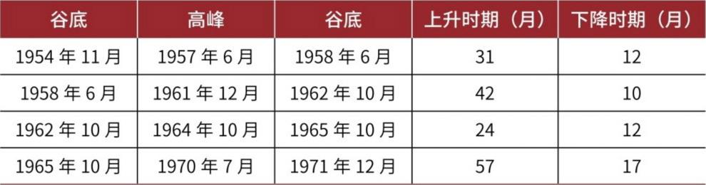
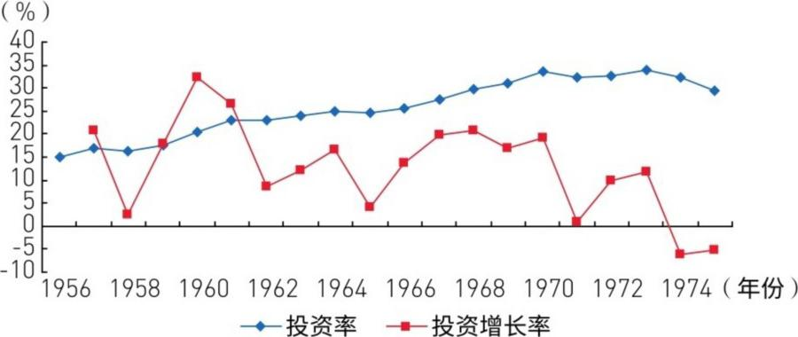
回到中国自身。从1981年开始，中国已经走过了两个完整的9年朱格拉周期。本轮从1999年起步，涨了5年，在2004年一季度见顶，随后连续5个季度下滑——确认2004年就是这轮中周期的头部。这个头部不仅是一次周期波动，很可能对中国整个工业化进程都具有标志性意义——它意味着高速增长阶段正在收尾。
下面图2-2清晰展示了这个中周期波动：
更关键的国际比较：中国固定资产投资增速的最高点很可能就是2004年——再也回不去了。国际经验显示：人均GDP达到1000美元后（罗斯托的"起飞前阶段"），投资率还会在高位再维持4-5年，但增速不会再创新高。不是说以后不会再有投资驱动的景气，而是增速的峰值已经永远过去了。中国经济的转型期，就从2004年正式启程。
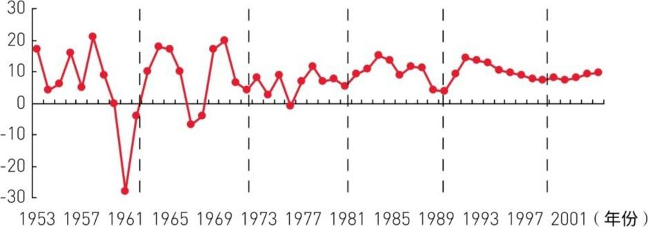
罗斯托的洞见：产业不会突然换一批全新的。新的主导产业一定跟以前的"老主导"有千丝万缕的联系——就像新枝从老干上长出来。未来哪个行业成为龙头，取决于三件事：① 技术到了什么水平；② 你有什么资源家底；③ 这轮经济是靠什么飞起来的（起飞的原动力）。
我们的方法很直接：先搞清楚中国这轮起飞靠什么，然后顺着这根藤摸出转型期什么产业会接力——这是长期视角。再把转型期的产业规律和短期的周期节奏叠加在一起，就得到了完整的产业选择路线图。下面开始展开。
教科书上说技术创新推动经济起飞。但罗斯托也指出，起飞不只靠创新——还可以靠"发现并利用尚未开发的新资源"。中国这轮走的是后一条路。中国本轮高速增长不是靠技术创新驱动的，核心技术是引进的。真正推动中国起飞的，是城市化——在全球化背景下，国际产业转移给了中国工厂，城市化给了中国工地，两股力量合在一起，推动了中国这轮超常增长。
说到创新和周期的关系，熊彼特是奠基人。他认为资本主义经济有三种周期嵌套在一起：短周期（3-4年库存波动）、中周期（9-10年设备投资）、长波周期（50-60年）——其中长波的根源是需要几十年才能完全渗透经济的重大技术革命（蒸汽机→铁路→电力→汽车→信息技术）。每一波长波都对应一个颠覆性技术的兴起和成熟。下面表2-2就是范杜因对五次长波的经典划分：
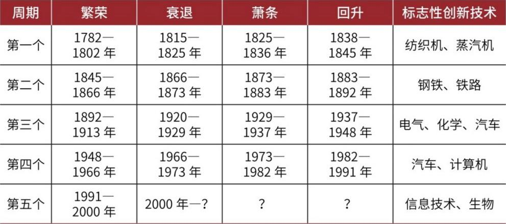
看历史：第一、二波长波是英国主导，美法跟随。第三波是美国工业化繁荣（电气化、汽车），自此美国成为全球创新领导者。第四波是日本和德国的繁荣期——电气和汽车的创新对他们推动极大。而中国这轮处于第五波长波的衰退期，全球重大技术创新正处于低谷，所以自主技术创新的推动力很弱。这轮中周期繁荣，主要靠的是技术引进和模仿，不是原创。
这个判断的投资含义是：别总盯着IT和生物科技——中国转型期真正重要的"技术创新"，是铁路技术、新材料技术这些"老技术的新扩散"。中国的任务是把前三次工业革命的技术引进、吸收、然后扩散到全国每一个工厂和工地。技术扩散比技术发明，在这个阶段更值钱。
技术创新推不动，那中国靠什么起飞？房地产开发——这就是本轮起飞的原动力。中国的城市化严重滞后于工业化，所以这轮起飞本质上是在"补城市化的课"。美、英、法的历史数据表明，工业化和城市化的相关系数接近1（几乎完美同步），但中国城市化掉队了，所以城市化成了这轮增长的核心引擎。
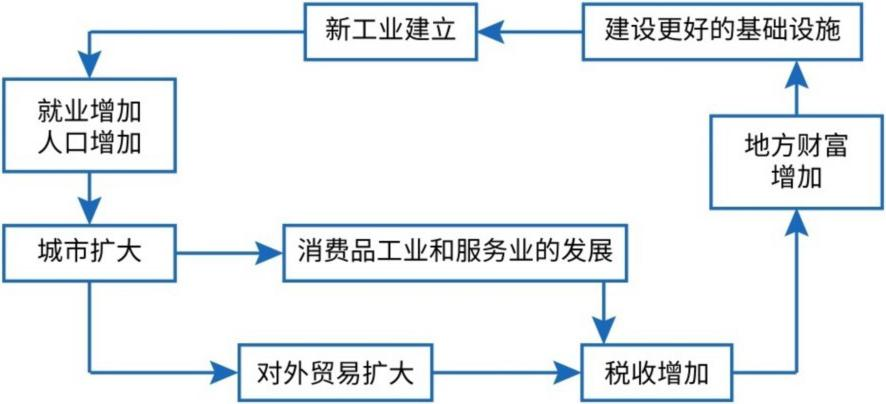
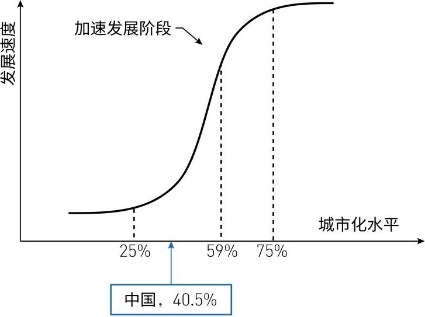
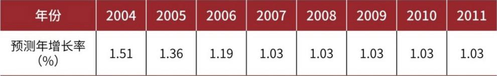
按照世界城市化S形曲线：城市化率30%以下是起步阶段（慢），30%-70%是加速阶段（快），70%以上是成熟阶段（慢）。中国现在40.5%，正好在加速段的正中间。北大的模型预测这个加速还会继续。只要没有大的外部冲击，城市化将沿S形轨道一路向上。图2-4展示了这个S形曲线，表2-3则是各年预测增长率：
从工业化中后期开始，城市化拉动工业化的力量，会反过来大于工业化推动城市化的力量——也就是说，城市自己会"繁殖"出更多的产业和就业，不再依赖工厂来推动。这个历史规律意味着：城市化本身就变成了经济增长的发动机，而不再只是工业化的"副产品"。
城市化对中国的意义非常具体：① 解决就业——房地产、基建、绿化、餐饮、保安、物业服务等劳动密集型产业，吸收低技术劳动力的效率远超汽车、高新技术、金融贸易。② 启动消费——把农村过剩劳动力转移进城，提高收入，推动第三产业发展。
城市化不是抽象概念——它直接决定你未来应该投什么产业。既然城市化是这轮起飞的原动力，那转型期的主导产业必然沿着城市化的线索展开。国际经验早已证明这一点。下面四条主线，就是我们的产业选择框架。
第一条主线：房地产。罗斯托说过一句很精辟的话：经济发展本质上就是"收入的转移"——钱从不太会生产的人手里，转到更会生产的人手里。这轮房地产恰好扮演了这个角色：把老百姓的储蓄变成了开发商的资本，变成了钢筋水泥和城市扩张。短期调控之后，房地产在转型期依然有活力。上海可能有局部泡沫，但挡不住全国大局——城市化正在向二三四线城市扩散，这才是房地产真正的底盘。
第二条主线：交通运输（城市间通道建设）。城市化不能各搞各的——城市之间要连通。这意味着一轮铁路、公路建设的大潮。罗斯托花了大量篇幅论述铁路在各国起飞中的决定性作用：铁路不仅运人运货，它的资金筹集和管理为大工业时代树立了榜样，铁路技术经验为后续的钢铁、机械等产业打了地基。对中国来说，高铁、城际铁路、高速公路——这些不仅是基建，更是打通全国市场血脉的工程。
第三条主线：全国统一市场（商业渠道）。城市化了，人进城了，消费就升级了——从吃饱穿暖到吃好穿好，从赶集到逛超市。这会彻底改变中国的流通方式和零售业态：连锁超市、物流配送、电商平台……都是这一轮的产物。交通发展降低物流成本 → 新市场被打开 → 新产品涌入。商业渠道的创新，本身就是巨大的投资机会。
第四条主线：城市服务业。城市化不仅需要钢筋水泥，更需要人服务人——物业、保安、餐饮、保洁、教育、医疗……城市越密，服务业越多。这是吸收就业的最大蓄水池，也是转型期最有韧性的产业群。总结来说，房地产→交通运输→商业渠道→城市服务业，这四条就是转型期基础配置的主脉络。
我们在第四季度就说过：中周期见顶后大家都在买"防御性行业"（比如医药、公用事业等），但买的人多了，防御性行业的估值优势就没了。而且随着周期下行，这些行业的防御性也在弱化。你不可能在整个下行期一直防御下去——这不符投资逐利的本质。"拿着不动"不可能是长期有效的策略。
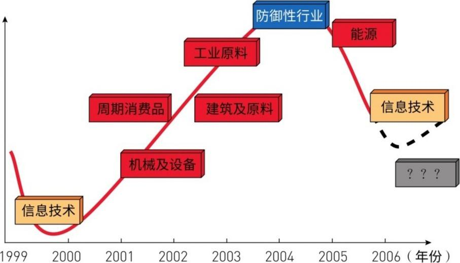
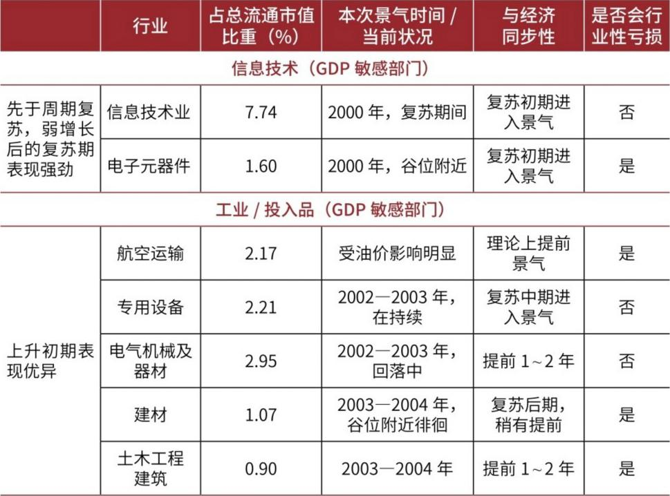
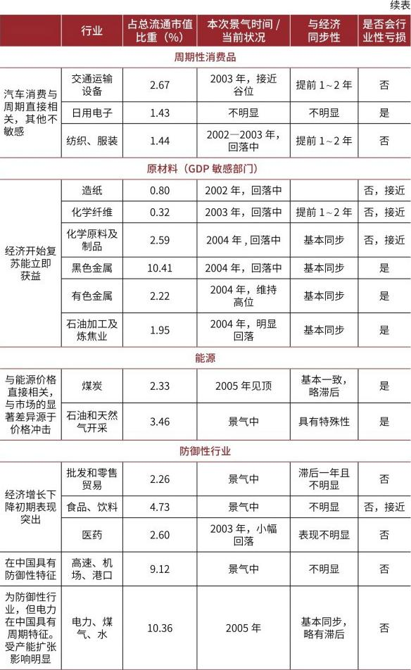
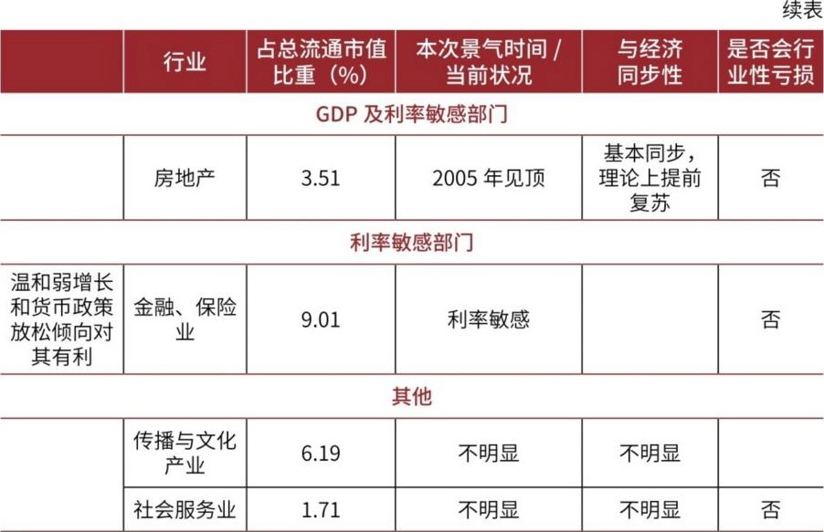
中周期（9-10年）虽然在下行，但短周期（3-4年库存周期）在2006年会触底反弹，带来一轮"弱景气"——工业利润会有所改善。这就是2006年市场会活跃起来的实体经济依据。
转型期本质上就是衰退期——价格下跌、产能过剩、竞争惨烈。企业怎么活下去？三条路：降成本（节流）、搞创新（开源）、搞重组（重新洗牌）。其中创新和重组最受资本市场关注——因为它们能讲出增长的故事。而且，这两件事往往就是被资本市场的投资需求推动的：市场想要什么故事，企业就做什么动作。
从日本等国的经验看，转型期重组有六个观察维度——这也就是我们选股票看公司的框架：
① 横向并购——同行吃同行，消化过剩产能。但这种机会可能只有一次，做完就没了。
② 纵向并购——上下游整合降成本，经济调整期里特别有效。
③ 规模经济——别迷信"龙头企业"。转型期很多行业还没到大集中阶段，龙头价值有限。
④ 中小企业的作用——在技术模仿和产业升级上，中小企业往往是真正的主力。
⑤ 渠道并购——全国统一市场形成时，渠道整合会是大生意。
⑥ 资本的作用——虚拟经济（资本市场）为并购提供弹药和舞台，它本身也是投资机会。
这六个角度，就是我们在转型期挑选产业和公司的核心观察框架。
小结：从产业选择看，城市化关联产业（房地产、交通、商业、服务业）是基础配置，适合长期持有。而技术创新+产业重组是进攻方向，与衰退周期相生相伴，是获取超额收益的重点。企业的创新力、成本控制力、整合力 = 核心竞争力。另外，货币政策是连接实体经济和虚拟经济（股市）的纽带，必须重点研究。
每次新兴大国崛起，都会改变全球分工体系，引发全球经济失衡。实体经济的调整短期搞不定，压力就通过金融市场来释放。这时候货币政策对实体经济和虚拟经济都至关重要。
历史上两次大失衡：第一次是1920-30年代美国崛起冲击英国，以全球经济大萧条收场。第二次是1970-80年代日本崛起，美日严重失衡，以布雷顿森林体系崩溃和日本经济衰退结束。失衡的根源都是：新兴经济体崛起 → 改变全球分工 → 主导国（美国）和主导货币（美元）出现信用危机 → 必须调整。
1990年代末以来，中国正在复制日本当年的剧本：美国巨额赤字 vs 中国巨额顺差。相似度极高，但程度远超当年的日本。中美谁都不会主动休克自己来调整经济。失衡压力怎么释放？只有两条路：
① 美国衰退 → 全球经济一起衰退（所有人都不想）
② 美元贬值 + 人民币升值（阻力最小的路径）
既然全世界都抗拒衰退，结果就是：中长期来看，美元必然贬值，人民币必然升值。这种情况下，中国的货币政策怎么走，非常微妙。
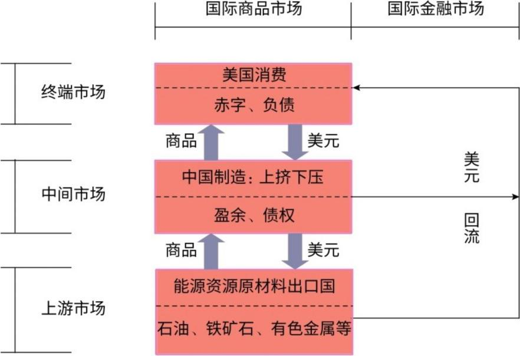
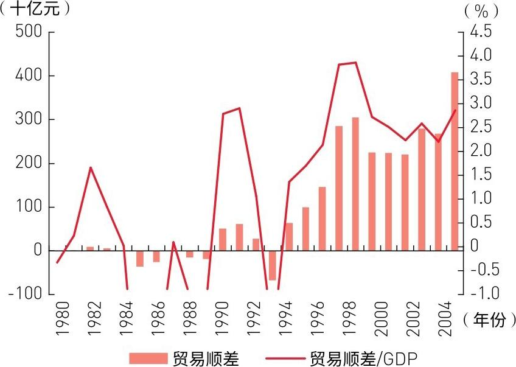
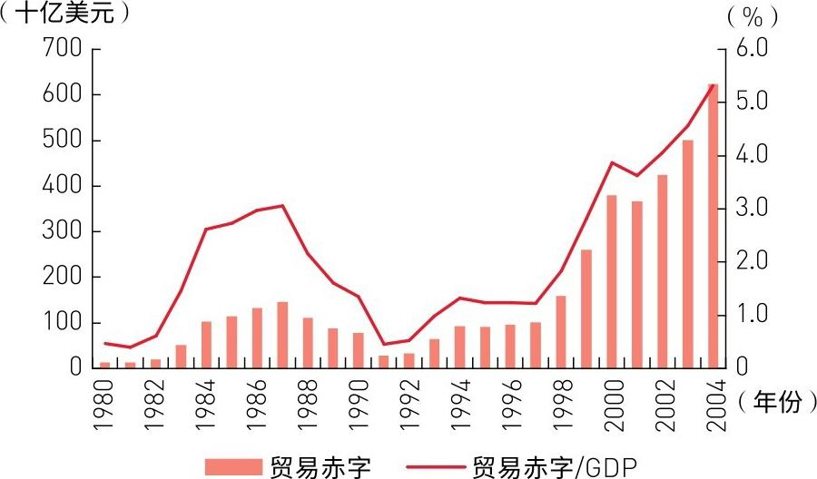
日本剧本：经济崛起 → 贸易顺差快速扩大 → 美国施压日元升值 → 1971年布雷顿森林体系崩溃 → 日元进入升值周期。但日本没有改变出口导向型增长方式，80年代顺差进一步暴增 → 1985年《广场协议》→ 日元升值失控 → 泡沫经济 → 1990年代"失去的十年"。
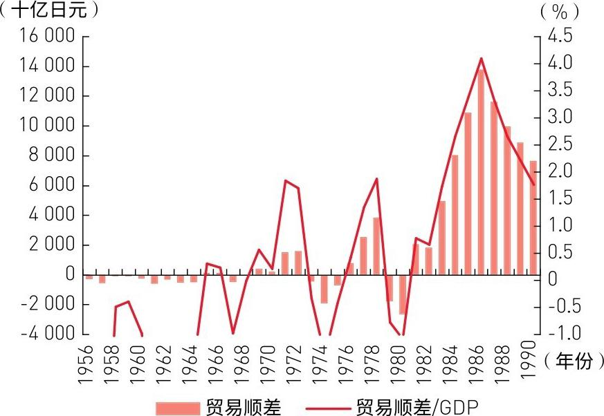
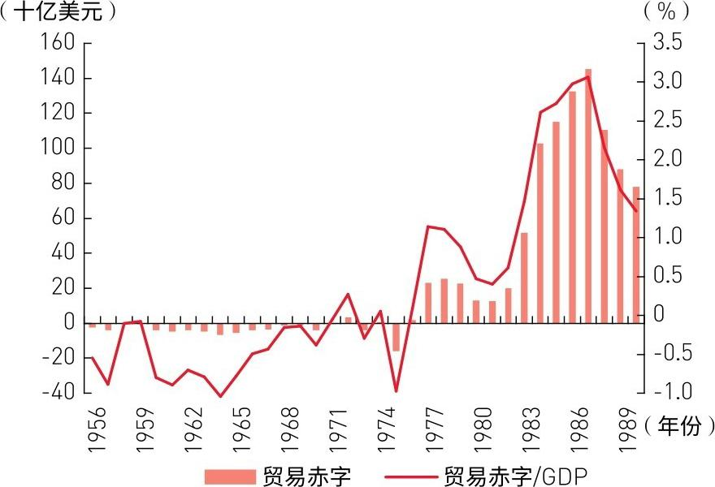
关键点：汇率升值幅度失控是核心变量。升值方式不同（渐进 vs 休克），结果天壤之别。汇率失控 + 金融自由化过快 = 泡沫的温床。而一旦陷入这个局面，任何国家可能都难以逃脱。
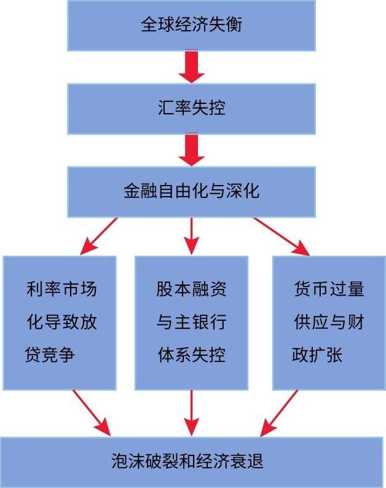
日本两个致命错误：
① 汇率自由化太快——升值幅度失控。
② 升值时搞大水漫灌——为了防止升值带来衰退，一边降息放水（扩张金融），一边财政撒钱（扩张财政），结果流动性泛滥，实体经济+虚拟经济双泡沫。
高柏教授一针见血：日本两次栽在同一个坑里——日元升值时，同时搞扩张金融+扩张财政。
规律①：主导国一出问题，全世界都得跟着调整。当美国这个"庄家"赤字和债务高到不可持续时，全球经济和金融体系必然面临重新洗牌。调整的压力来自四面八方——贸易争端、货币体系崩溃风险、各国内部结构改革——这是一个问题的不同侧面。中国主动提出"转变经济增长方式"，本身就意味着未来国际分工体系将发生重大改变。
规律②：实体经济调不动，压力就转嫁到金融体系。经济结构就像一艘巨轮，掉头极慢——不可能今天说转型明天就转过来。既然实体经济调整太慢太难，失衡压力就会通过汇率、利率、资产价格这些金融渠道来释放。中国2005年启动的汇率改革，正是这条规律的活生生体现。
规律③：升值方式决定国家命运。渐进式升值 vs 休克式升值，通往完全不同的结局。更要命的是——怎么升值很可能根本不由中国自己说了算，而是被全球失衡调节的内在力量推着走。所以尽力争取渐进式升值，是中国的最优策略。否则一旦被逼着急升，就会陷入泡沫还是衰退的两难困境。
规律④：升值必然伴随金融自由化，风险巨大。汇率从固定转向浮动，金融市场就必须开放和深化——这既有外部压力（美国施压），也有内生需求（完善市场）。但金融自由化是把双刃剑：货币政策要同时平衡国内经济、国际汇率、实体经济、虚拟经济——往往力不从心。信贷控制是决定实体经济走向的关键。从这个逻辑看，中国"宽货币（低利率）+紧信贷（严控贷款）"的格局可能会持续相当长时间。
中国和日本不完全一样，但从世界经济失衡调节的过程看，可比性很强。2015年7月21日人民币汇改已经启动。不到一年里，汇率浮动化、利率市场化、外汇流动自由度扩大……金融自由化的苗头已经出现。中国已经站在风口浪尖。下一步怎么走，决定不同的未来。
取决于两个变量：升值方式（渐进 vs 被迫快升）和货币政策（稳健 vs 宽松）。
情景一（最理想）：渐进升值 + 稳健货币政策。给经济转型争取时间，实体平稳、虚拟不泡沫。代价是央行要频繁干预市场，比较辛苦。
情景二（危险）：被迫快升 + 信贷放松。为对冲出口下滑，放水救市 → 流动性泛滥 → 实体和虚拟双泡沫 → 日本式泡沫经济。
情景三（痛苦）：被迫快升 + 信贷紧缩。不放水 → 实体经济硬着陆 → 通缩和经济衰退。
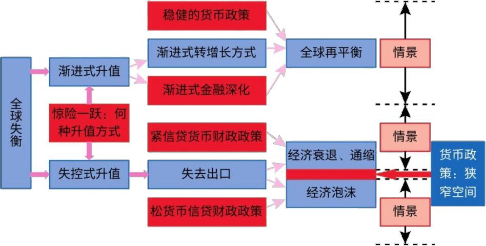
金融自由化把货币政策推到了一个高难度阶段。央行不能再只看国内通胀和增长——还要盯汇率（升值太快不行）、盯资产价格（股市房价泡沫不行）、盯金融安全（银行坏账不行）。货币政策像是在四个鸡蛋上跳舞，哪个都不能踩碎。
我们的中长期政策建议很明确：① 争取渐进升值（别被逼急升）；② 金融自由化要谨慎、严监管（别像日本一样搞太快）；③ 财政适当宽松来调结构和拉内需；④ 严防在升值时大水漫灌（这是日本的致命伤）。只有这几条都做到，才能在转型期保持平稳增长、避免泡沫。否则，泡沫和衰退之间，中国必选其一。
落到2006年具体判断：货币政策取决于四个变量——增长、通胀、汇率、银行改革。增长放缓+通胀压力减轻 → 不需要紧缩。汇率升值压力还在 → 需要保持适度宽松。但银行改革要求资本充足率达标 → 不可能大放贷款。结论："松货币+紧信贷"格局延续——钱便宜但难借。具体预测：人民币年底到7.85（升值2%-3%），一年期利率维持在2%-2.25%。
央行想走"中间路线"——既不紧缩也不大放水，在各方之间找平衡。如果真能这样，虚拟经济不会有大泡沫，也不会有大崩盘。但问题是：汇率已经不是纯经济问题，而是政治博弈。美国国会、G20、国际游资……都在对人民币施压。央行可能根本掌控不了节奏——一旦被迫调整汇率政策，货币政策也得跟着动，市场震动不会小。央行的"中间路线"可能只是一厢情愿。
这是本章最核心的结论：2006年，中国虚拟经济大繁荣的起点来了。
为什么？实体经济（中周期下行）不能支撑股市持续上涨，但国际工业化史比较告诉我们——每个国家在工业化中后期，虚拟经济都会有一次超越周期的大繁荣。信号已经出现：资源品价格涨了、艺术品价格涨了、房地产价格涨了。股市还没跟上——因为制度问题（股权分置）一直在压制。但随着股改推进、制度完善、产品创新，2006年就是中国股市繁荣的起点。初期不一定全面开花，更多体现为市场活跃度提高、局部机会增多。
虚拟经济和实体经济的关系不是简单的"镜像"——大多数时候同步，但在工业化后期的某个阶段，虚拟经济会脱离实体经济，走出独立的大繁荣。这种大繁荣时长以十年计，虽然也有起落，但从大的趋势看超越了普通的3-4年短周期甚至9-10年中周期。它是在特定的"临界条件"被触发之后才出现的，而中国正在逼近这些临界点。
国际铁证：🇺🇸 美国1920年代（"沸腾的二十年代"，道指涨了5倍）、🇯🇵 日本1960年代（日经从300涨到2000+）、🇰🇷 韩国1980年代中后期、🇹🇼 中国台湾1980年代中后期——四个经济体，一样的剧本：工业化中后期 → 股市大繁荣。没有一个工业化经济体逃过这个规律。这不是巧合，是必然。
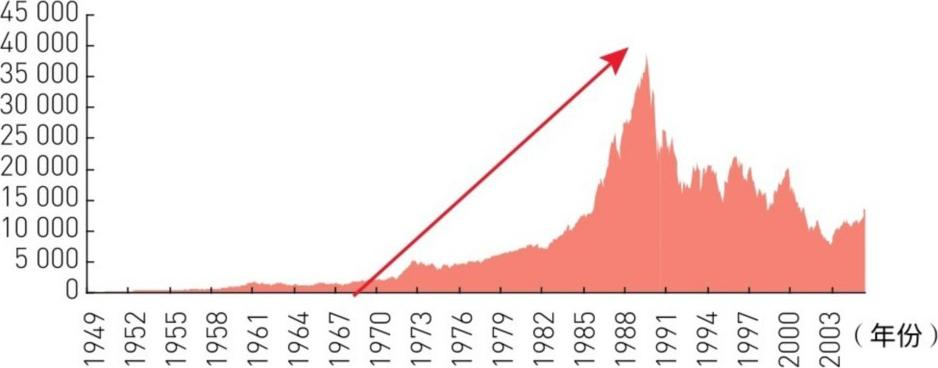
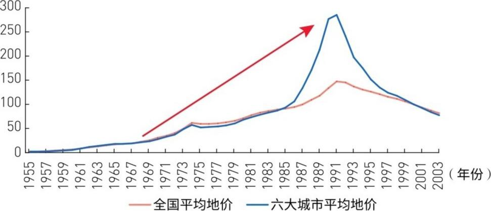
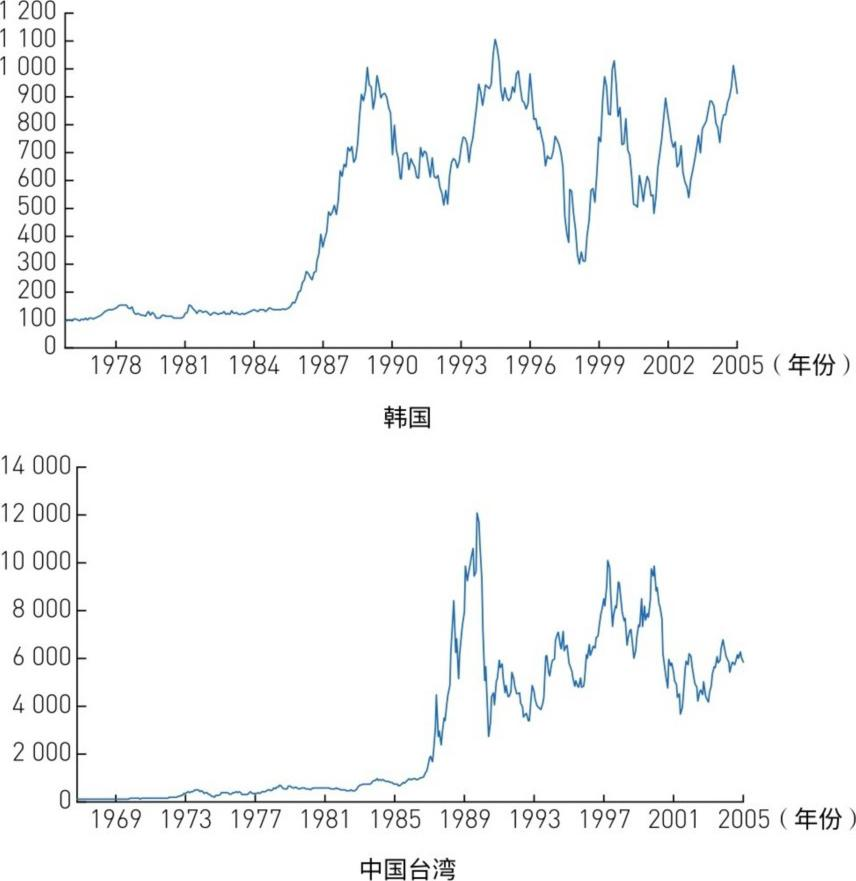
韩国和中国台湾的虚拟经济繁荣比美日更快、更短——80年代中期启动，80年代末就到达顶点。这说明后发经济体的虚拟经济繁荣可能更"浓缩"。
六步路径，非常清晰：
① 工业化大发展 → 社会经济水平大幅提高
② 企业急需直接融资 → 光靠银行贷款不够了，必须发展股市
③ 资本市场重要性上升 → 国家开始真正重视
④ 制度建设加速 → 股市从不成熟走向成熟
⑤ 万事俱备 → 实体经济有需求 + 制度完善 + 老百姓有钱想投资
⑥ 大繁荣来了 → 股市大涨，初期还能反哺实体经济、平滑周期
⚠️ 但如果繁荣过头变泡沫再破裂——对实体经济的伤害反而更大。
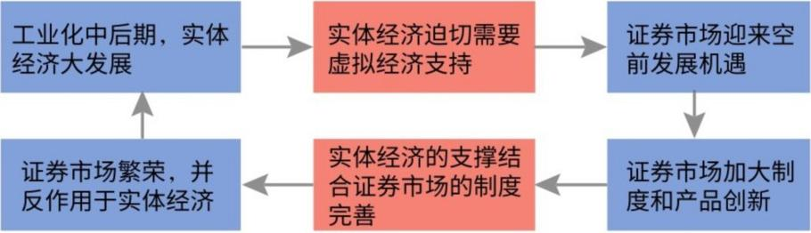
以日本为镜来看中国。日本战后10年经济复兴，1955年达到最好水平。但资本市场严重落后——在政府"间接金融优先"（能找银行借就别发股票）的政策下，股市只是一个边缘化的融资渠道，企业缺钱第一反应是找银行，而不是上市筹资。这个状态和2005年股改前的中国非常像。
1955-1965年重化工业大发展，设备投资光靠银行贷款不够了——企业被迫转向股市筹资，股票融资比重急剧上升。1958年之前还是老套路只向老股东配股，1958年后首次向普通民众公开售股——老百姓开始能买股票了。这一转变标志着：实体经济已经离不开资本市场，虚拟经济的舞台搭好了。
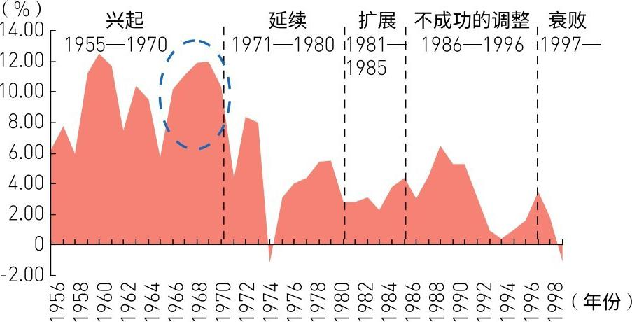
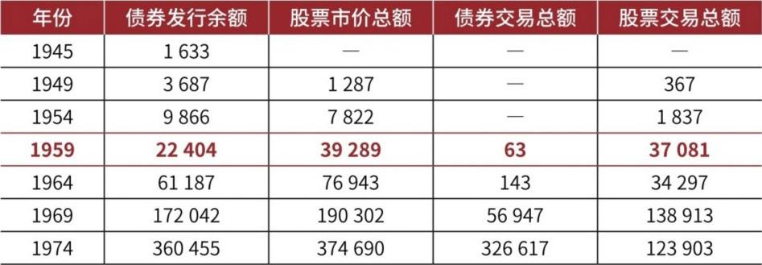
日本1961年股市第一次繁荣后泡沫破灭，政府被迫出手：停止新股上市和增发配股、给券商提供流动性、成立托市基金。这次证券萧条反而为后来更大的繁荣创造了条件。
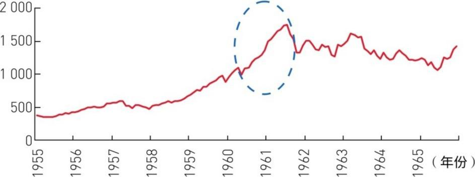
1958年股市向普通民众开放 → 1961年第一次繁荣 → 泡沫破灭 → 1965年《证券交易法修正案》→ 发行制度从按面额配股改为按市价发行（定价市场化）。每一次危机都推动了制度升级。
第三个关键条件：对外开放。1960年代末日本资本市场开始走向国际化——一步步放宽外资买股限制、增批海外分支机构、投资信托自由化、允许个人买卖外国证券……每一步开放都在给市场注入活水，把日本股市从一个封闭的小池塘变成连通全球的大湖。这和中国的QFII开放、沪港通等是完全对应的。
与此同时，投资理念也在升级：从"看分红率"这种老派标准，转向看PE（市盈率）和PB（市净率）等现代估值指标。炒股不再是简单的买便宜货，而是开始做估值对比——这个股票凭什么比那个贵？成长性怎么样？制度国际化+估值现代化+投资理念成熟化，共同为日本1980年代的大繁荣浇筑了地基。这段历史对中国2006年之后的市场演化，几乎就是一张路线图。
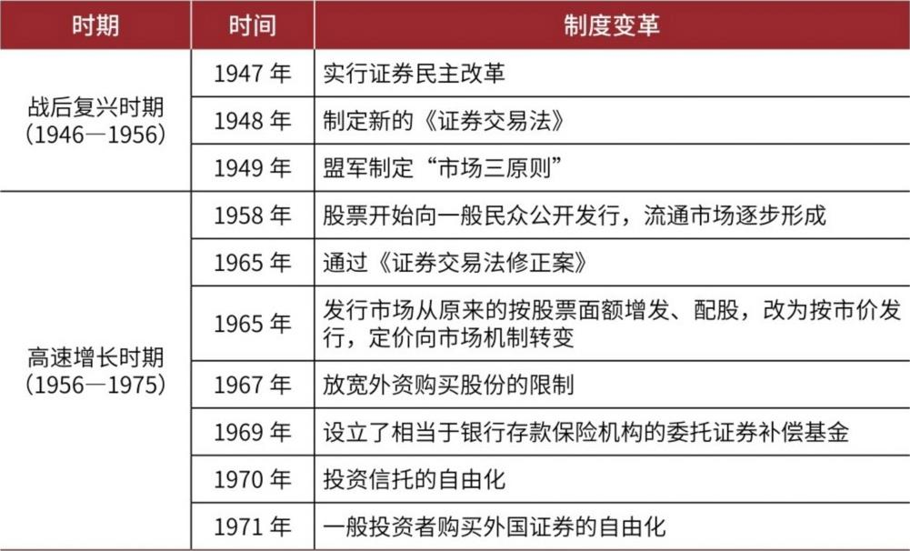
日本1960年代初期，房地产第一次价格暴涨——涨幅甚至超过后来的几次泡沫。这和股市第一次暴涨几乎同步。在繁荣初期，股市和房地产互相支撑：房地产涨 → 财富效应 → 更多钱进股市 → 股市涨。但到了后期可能"一山不容二虎"——房市泡沫最终会拖垮股市。不过至少在初期，房地产繁荣对股市是利好。
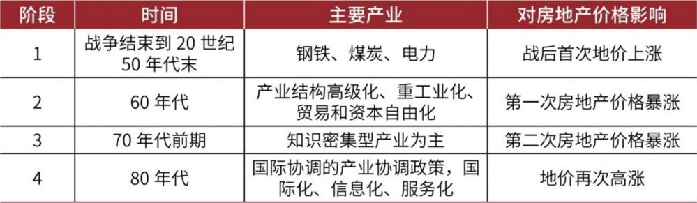
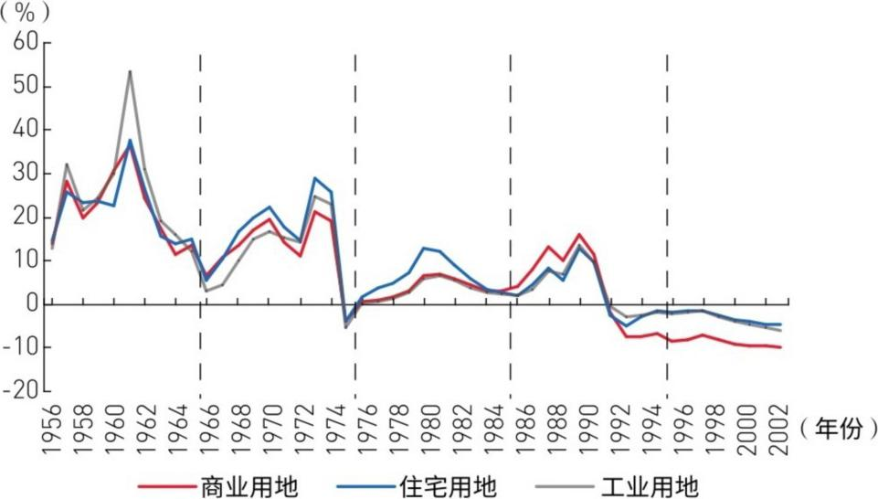
总结：虚拟经济繁荣起点的四个前提条件——① 实体经济高速发展，企业对资本市场融资需求大增；② 经历过一次证券萧条，触发了制度重建；③ 资本市场制度完善+对外开放+投资理念升级；④ 房地产初期繁荣提供财富效应支撑。
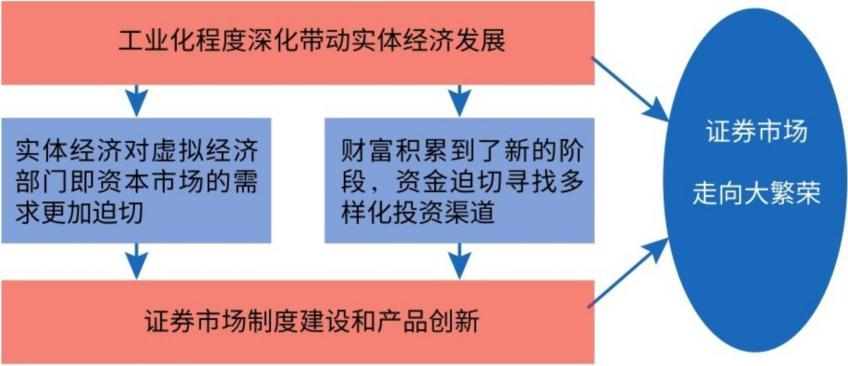
中国两个基础条件已经满足：① 实体经济迫切需要资本市场（企业需要直接融资）；② 老百姓财富积累到了一定阶段（有钱想投资了）。一个大家都有需求的市场，才有繁荣的可能。
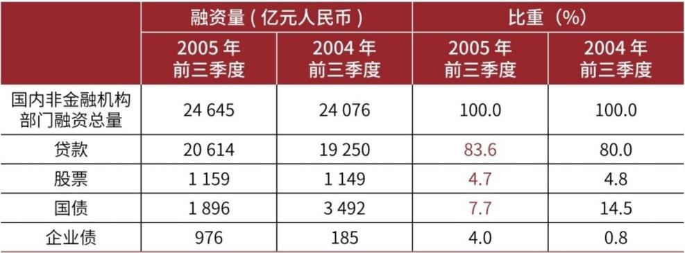
2005年前三季度，中国企业直接融资（发股票）只占总融资的4.7%——太低了！中国现在和日本1961年后的证券萧条非常相似：资本市场重要但股价持续下跌，市场失去活力。这时候，特别需要制度修正和重建。
12万亿储蓄 vs 4000亿市值——这个数字对比太震撼了。市场根本不缺钱，缺的是让钱愿意进来的好标的和好制度。储蓄率占GDP的80%以上，证券化率只有30%——股市严重滞后，加速发展刻不容缓。
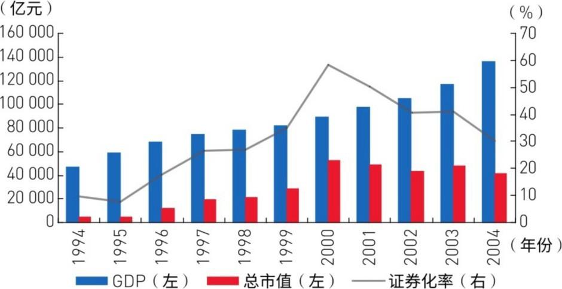
中国和日本相似度极高。日本在真正大繁荣之前，经历了制度重建和产品创新。中国股市不到20年，制度不完善——尤其股权分置这个顽疾一直压制市场。但好消息是：经历了2001-2005年的大熊市（类似日本的证券萧条），制度重建已经启动——股权分置改革正在平稳推进。一旦这些制度障碍被扫除，虚拟经济繁荣指日可待。
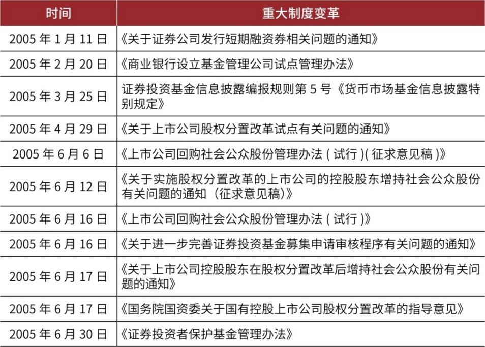
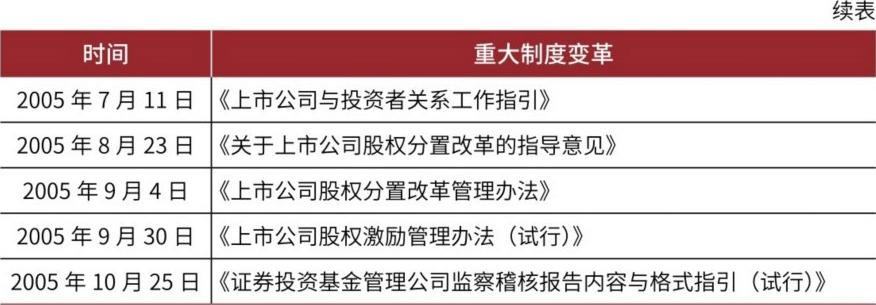
人民币渐进升值 + 低利率 = 虚拟经济繁荣的催化剂：
① 人民币慢慢升值 → 热钱持续流入赌人民币继续升
② 央行对冲升值压力必须维持低利率（加息会吸引更多热钱）
③ 低利率 → 资金成本低 → 钱涌入股市和房地产
④ 资产价格泡沫逐步形成
更要命的是，这可能形成一个恶性循环：渐进升值 → 出口保持增长 → 顺差更大 → 升值压力更大 → 必须继续维持低利率 → 更多钱流入虚拟经济……
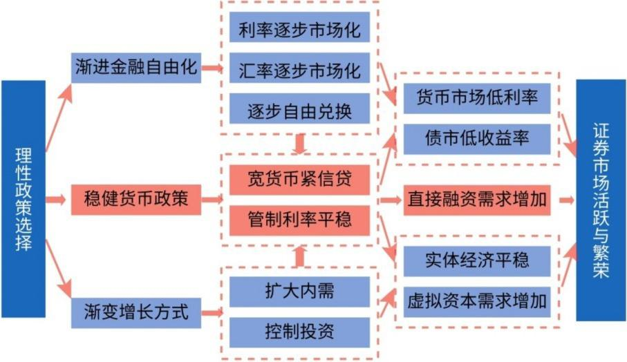
2006年总体判断：没有全面大牛市，但市场会很活跃，机会在局部。转型期本质上是经济衰退，会抑制繁荣的程度——但作为"起点"，活跃度提升本身就是机会。
股改完成 → 全流通时代 → 控制权市场活跃 → 并购重组行情。QFII（外资机构投资者）不仅带来增量资金，更带来成熟的投资理念和估值标准。
中小板是2006年为数不多的亮点。中小板率先完成股改、推出独立指数——管理层明显在扶持。日本经验表明：转型期中小企业是维持经济增长的主力，"中坚企业"的成长是最精彩的阶段。1961年日本也开设了第二市场（类似中小板），上市的主要是高增长的中型企业。
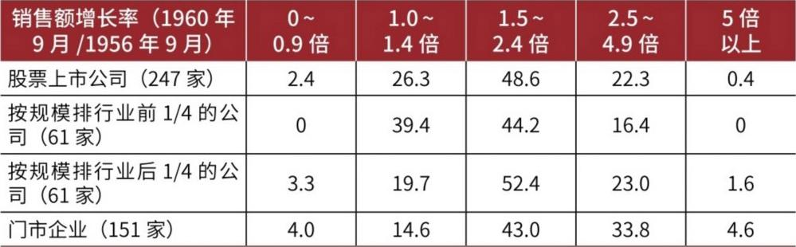
中小板的投资机会：① 基本面好，平均业绩明显高于主板；② 成长性强，具备成为"中坚企业"的潜力，并购价值高 → 估值溢价。
权证、股指期货等衍生品创新 → 新玩法 → 新资金入场 → 市场活跃度提升 → 波动加大 → 波动本身就是机会。引入卖空机制、"T+0"等交易制度创新，也能促进初期繁荣。
创新带来的不仅是资金，更重要的是信心。
这是一篇写于2005年12月的重磅报告，核心逻辑链条非常清晰：
1. 中周期见顶（2004年）→ 经济进入转型期
→ 转型期本质上是衰退期，投资增速的峰值可能再也回不去了
2. 转型期产业选择 → 基础配置+进攻方向
→ 基础配置：沿城市化线索——房地产、交通运输、商业渠道、城市服务业
→ 进攻方向：技术创新+企业重组（六个观察角度）
3. 全球经济失衡 → 人民币必然升值
→ 中国正在复制日本1980年代的剧本，程度更严重
→ 要么美国衰退，要么人民币升值——全世界选后者
→ 日本的教训：升值时绝不能大放水
4. 中国货币政策 → "松货币、紧信贷"走钢丝
→ 三种前景：理想（渐进+稳健）、泡沫（快升+放水）、衰退（快升+紧缩）
→ 汇改已是政治博弈，央行不一定能掌控节奏
5. 最核心判断：2006年是中国虚拟经济大繁荣的起点
→ 四条件全部齐备：实体经济需求 + 证券萧条→制度重建 + 制度建设加速 + 居民储蓄12万亿
→ 人民币渐进升值是催化剂（低利率 → 热钱流入 → 资产价格泡沫）
→ 初期以局部机会为主：并购重组 + 中小板 + 制度/产品创新
| 原文术语 | 大白话解释 |
|---|---|
| 中周期 / 朱格拉周期 | 约9-10年的设备投资周期，企业更新设备、扩大产能的循环 |
| 短周期 / 库存周期 | 约3-4年的库存循环，企业进货→卖货→再进货的节奏 |
| 长波 / 康波周期 | 约50-60年的超长周期，由重大技术创新驱动 |
| 工业化转型期 | 从高速增长阶段过渡到成熟阶段的时期，本质上是经济调整/衰退期 |
| 虚拟经济 | 股市、房地产等资产市场，区别于生产商品的实体经济 |
| 繁荣起点论 | 周金涛的核心判断：2006年中国进入虚拟经济大繁荣的起点阶段 |
| 布雷顿森林体系 | 二战后建立的以美元为中心的国际货币体系，1971年崩溃 |
| 广场协议 | 1985年美日等国签订的迫使日元升值的协议，日本泡沫经济的导火索 |
| 松货币、紧信贷 | 利率低（钱便宜），但银行贷款门槛高（不容易借到） |
| 股权分置改革 | 2005年中国股市重大改革，解决"同股不同权"的历史遗留问题 |
| S形曲线规律 | 城市化率30%-70%是加速阶段，轨迹呈S形 |
| 罗斯托起飞理论 | 经济史学家罗斯托提出：每个国家经济发展都要经历"起飞阶段" |
| QFII | 合格境外机构投资者——允许外资进入中国股市的制度安排 |
| 证券化率 | 股市总市值 ÷ GDP，衡量股市相对经济规模 |
| PE / PB | 市盈率（股价÷每股利润）/ 市净率（股价÷每股净资产），估值指标 |